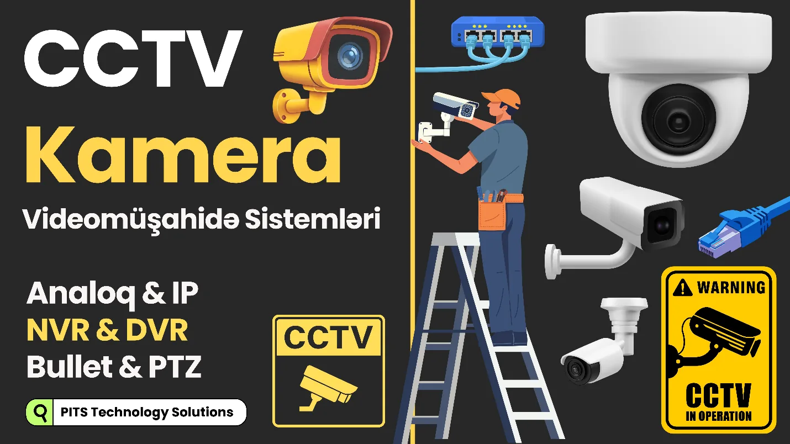
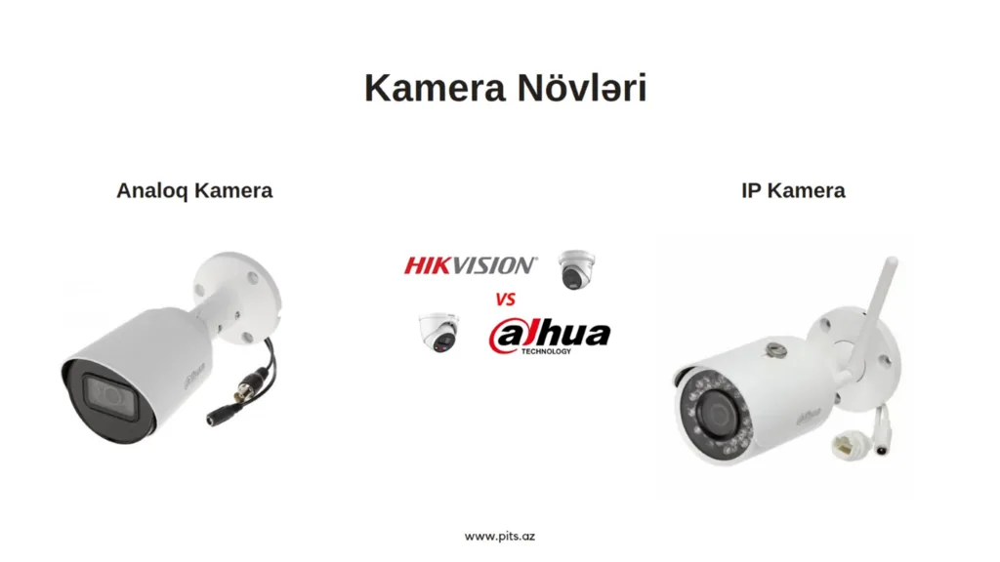
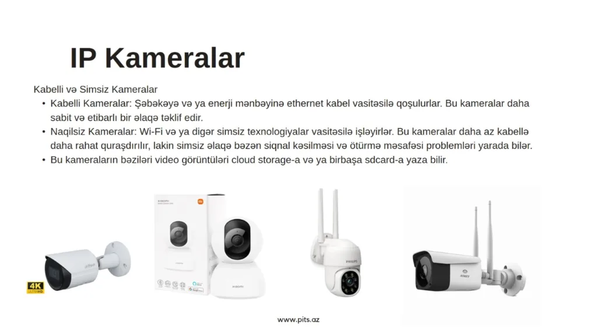
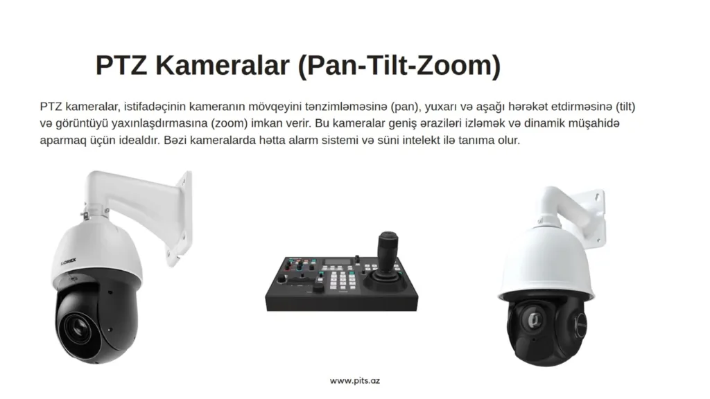

CCTV Kamera – Videomüşahidə Sistemləri

Təsəvvür et ki, bir obyektin – evin, ofisin, mağazanın və ya məktəbin – gözü var və o göz 24 saat yatmır. Məhz bu "göz" CCTV kamera sistemləridir. CCTV (Closed Circuit Television) – yəni qapalı dövrə videomüşahidə sistemi, görüntünü yalnız icazəli şəxslərin görə bildiyi təhlükəsizlik həllidir.
Bu sistemlər əsasən təhlükəsizlik, nəzarət və sübut məqsədi ilə istifadə olunur. Oğurluq, qayda pozuntusu, iş prosesinə nəzarət və hətta hadisə sonrası araşdırmalar üçün CCTV artıq lüks yox, ehtiyacdır.
CCTV Sisteminin Əsas Hissələri
Sadə dillə desək, CCTV sistemi 4 əsas hissədən ibarətdir:
- Kamera – görüntünü çəkən hissə
- Video qeydiyyat aparan cihaz (DVR / NVR) – görüntünü yaddaşa yazan cihaz
- Sabit yaddaş diski (HDD) – videoların saxlandığı yer, SSD də ola bilər.
- Monitor və ya telefon – görüntüyə baxdığımız ekran
Əlavə olaraq kabellər, adapterlər, switch və internet bağlantısı da istifadə olunur.

CCTV Kamera Növləri
1 Analoq kameralar (HD Analog)
Bu kameralar daha köhnə texnologiyadır, amma hələ də geniş istifadə olunur.
Üstünlükləri:
- Daha ucuzdur
- Quraşdırması nisbətən sadədir
- Kiçik obyektlər üçün kifayətdir
Çatışmazlıqları:
- Kabel məsafəsi məhduddur
- Genişləndirmə çətindir
Bu kameralar adətən DVR ilə işləyir. Görüntü keyfiyyəti IP kamera qədər güclü deyil.
2 IP kameralar (Network Camera)
Müasir CCTV sistemlərinin əsasını IP kameralar təşkil edir.
Üstünlükləri:
- Yüksək görüntü keyfiyyəti (Full HD, 4K)
- Şəbəkə üzərindən işləyir
- Uzaqdan baxış və idarəetmə rahatdır
- Böyük sistemlər üçün idealdır
Çatışmazlıqları:
- Qiyməti bir az bahadır
- Şəbəkə bilikləri tələb edir
IP kameralar NVR və ya birbaşa server üzərindən işləyə bilər.
3 Wi-Fi kameralar
Bu kameralar əsasən ev və kiçik ofislər üçün nəzərdə tutulub.
Üstünlükləri:
- Kabel çəkməyə ehtiyac azdır
- Telefonla rahat idarə olunur
- Tez quraşdırılır
Çatışmazlıqları:
- Wi-Fi keyfiyyətindən asılıdır
- Peşəkar obyektlər üçün uyğun deyil
- Təhlükəsizlik riski ola bilər (Temu-dan gələn ucuz Çin modellərində)

Kamera Formaları və Hansı Sistemi Seçməliyik?
Kamera formalarına görə növlər
- Bullet kamera – uzun formalı, əsasən açıq sahələr üçün
- Dome kamera – tavan üçün ideal, haraya baxdığı bilinmir
- PTZ kamera – sağa-sola, yuxarı-aşağı hərəkət edir, zoom edir

Hansı sistemi seçməliyik?
- Ev və kiçik mağaza → Analoq və ya Wi-Fi kameralar, SD card ilə (çünki ucuz olur)
- Ofis, məktəb, xəstəxana və s. → IP kamera və NVR cihazı (HDD ilə)
- Böyük obyekt, zavod, anbar → IP kamera + PTZ kameralar, NVR + HDD
Əsas məsələ brend (Dahua, Hikvision) yox, düzgün planlama və ehtiyaca uyğun seçimdir. Mən Dahua kameraları bəyənirəm və hər yerdə onu istifadə edirik.
| Xüsusiyyət | Analoq | IP |
|---|---|---|
| Görüntü keyfiyyəti | Orta | Yüksək |
| Şəbəkə üzərindən idarə | Məhdud | Daha rahat |
| Kamera sayını artırma – genişlənmə | Çətin | Asan |
| Qiymət | Ucuz | Bir az bahalı |
| Record | DVR / HVR | NVR |
| Kabel | Koaksial və elektrik | Ethernet CAT 5e |
| PoE Smart Switch | Ehtiyac yoxdur | Ehtiyac var |
CCTV Sisteminin Qurulması Necə Aparılır?
Təcrübədən deyim: kamera almaq işin 30%-idir, düzgün quraşdırma isə 70%.
Quraşdırma zamanı əsas addımlar:
Obyektin analiz edilməsi (haralar risklidir)
Kamera yerlərinin düzgün seçilməsi
Kabel və ya şəbəkə planlaması
DVR/NVR-in konfiqurasiya olunması
Uzaqdan baxışın (mobile / web) qurulması: port açmaq, QR kodu scan edib app ilə telefondan baxmaq
Test etmək və sonda istifadəçiyə izah etmək
Yanlış bucaqla qoyulan ən bahalı kamera belə faydasız ola bilər. Kim baxacaqsa, onunla məsləhətləşin, sonra işi bitirin.
CCTV sistemi sadəcə kamera deyil – bu, təhlükəsizlik mədəniyyətidir. Düzgün qurulmuş sistem həm insanı, həm də biznesi qoruyur. Ucuz sistem qurmaq olar, amma ağıllı sistem qurmaq daha önəmlidir.
Əgər kamera sistemi qurularkən "hara qoyaq, necə baxaq" sualları düzgün cavablanıbsa, artıq işin yarısı görülüb deməkdir.